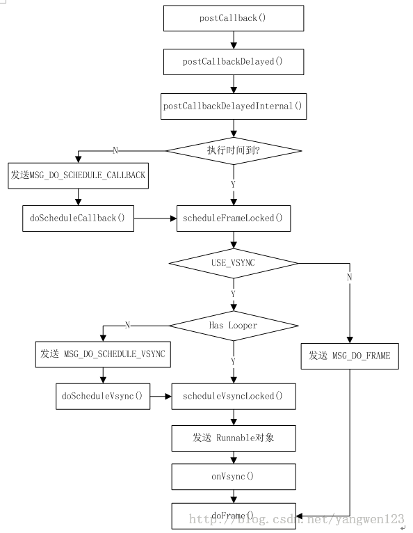
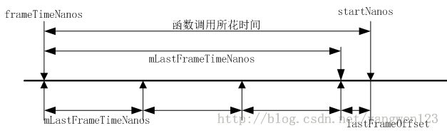
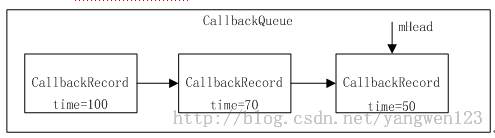
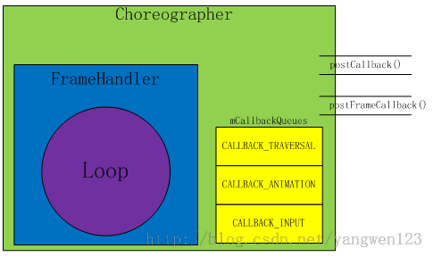
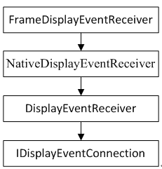

|
在Android4.1之后增加了Choreographer机制，用于同Vsync机制配合，实现统一调度界面绘图.
Choreographer构造过程
frameworks\base\core\java\android\view\Choreographer.java
- public static Choreographer getInstance() {
- return sThreadInstance.get();
- }
- private static final ThreadLocal<Choreographer> sThreadInstance =
- new ThreadLocal<Choreographer>() {
- @Override
- protected Choreographer initialValue() {
- Looper looper = Looper.myLooper();
- if (looper == null) {
- throw new IllegalStateException("The current thread must have a looper!");
- }
- return new Choreographer(looper);
- }
- };
为调用线程创建一个Choreographer实例，调用线程必须具备消息循环功能，因为ViewRootImpl对象的构造是在应用程序进程的UI主线程中执行的，因此创建的Choreographer对象将使用UI线程消息队列。
- private Choreographer(Looper looper) {
- mLooper = looper;
- //创建消息处理Handler
- mHandler = new FrameHandler(looper);
- //如果系统使用了Vsync机制，则注册一个FrameDisplayEventReceiver接收器
- mDisplayEventReceiver = USE_VSYNC ? new FrameDisplayEventReceiver(looper) : null;
- mLastFrameTimeNanos = Long.MIN_VALUE;
- //屏幕刷新周期
- mFrameIntervalNanos = (long)(1000000000 /
- new Display(Display.DEFAULT_DISPLAY, null).getRefreshRate());
- //创建回调数组
- mCallbackQueues = new CallbackQueue[CALLBACK_LAST + 1];
- //初始化数组
- for (int i = 0; i <= CALLBACK_LAST; i++) {
- mCallbackQueues[i] = new CallbackQueue();
- }
- }
变量USE_VSYNC用于表示系统是否是用了Vsync同步机制，该值是通过读取系统属性debug.choreographer.vsync来获取的。如果系统使用了Vsync同步机制，则创建一个FrameDisplayEventReceiver对象用于请求并接收Vsync事件，最后Choreographer创建了一个大小为3的CallbackQueue队列数组，用于保存不同类型的Callback。
添加回调过程
frameworks\base\core\java\android\view\Choreographer.java
- public void postCallback(int callbackType, Runnable action, Object token) {
- postCallbackDelayed(callbackType, action, token, 0);
- }
- public void postCallbackDelayed(int callbackType,
- Runnable action, Object token, long delayMillis) {
- if (action == null) {
- throw new IllegalArgumentException("action must not be null");
- }
- if (callbackType < 0 || callbackType > CALLBACK_LAST) {
- throw new IllegalArgumentException("callbackType is invalid");
- }
- postCallbackDelayedInternal(callbackType, action, token, delayMillis);
- }
- private void postCallbackDelayedInternal(int callbackType,
- Object action, Object token, long delayMillis) {
- synchronized (mLock) {
- final long now = SystemClock.uptimeMillis();
- final long dueTime = now + delayMillis;
- //将要执行的回调封装成CallbackRecord对象，保存到mCallbackQueues数组中
- mCallbackQueues[callbackType].addCallbackLocked(dueTime, action, token);
- //函数执行时间到
- if (dueTime <= now) {
- scheduleFrameLocked(now);
- } else {//通过异步消息方式实现函数延时执行
- Message msg = mHandler.obtainMessage(MSG_DO_SCHEDULE_CALLBACK, action);
- msg.arg1 = callbackType;
- msg.setAsynchronous(true);
- mHandler.sendMessageAtTime(msg, dueTime);
- }
- }
- }
- private final class FrameHandler extends Handler {
- @Override
- public void handleMessage(Message msg) {
- switch (msg.what) {
- case MSG_DO_SCHEDULE_CALLBACK:
- doScheduleCallback(msg.arg1);
- break;
- }
- }
- }
- void doScheduleCallback(int callbackType) {
- synchronized (mLock) {
- if (!mFrameScheduled) {
- final long now = SystemClock.uptimeMillis();
- if (mCallbackQueues[callbackType].hasDueCallbacksLocked(now)) {
- scheduleFrameLocked(now);
- }
- }
- }
- }
- private void scheduleFrameLocked(long now) {
- if (!mFrameScheduled) {
- mFrameScheduled = true;
- //检查是否使用了Vsync机制
- if (USE_VSYNC) {
- //如果当前线程具备消息循环，则直接请求VSync信号
- if (isRunningOnLooperThreadLocked()) {
- scheduleVsyncLocked();
- } else {//如果当前线程不具备消息循环，则通过主线程请求VSync信号
- Message msg = mHandler.obtainMessage(MSG_DO_SCHEDULE_VSYNC);
- msg.setAsynchronous(true);
- mHandler.sendMessageAtFrontOfQueue(msg);
- }
- } else { //如果系统没有使用VSync机制，则使用异步消息延时执行屏幕刷新
- final long nextFrameTime = Math.max(
- mLastFrameTimeNanos / NANOS_PER_MS + sFrameDelay, now);
- Message msg = mHandler.obtainMessage(MSG_DO_FRAME);
- msg.setAsynchronous(true);
- mHandler.sendMessageAtTime(msg, nextFrameTime);
- }
- }
- }
在该函数中考虑了两种情况，一种是系统没有使用Vsync机制，在这种情况下，首先根据屏幕刷新频率计算下一次刷新时间，通过异步消息方式延时执行doFrame()函数实现屏幕刷新。如果系统使用了Vsync机制，并且当前线程具备消息循环，则直接请求Vsync信号，否则就通过主线程来请求Vsync信号。FrameDisplayEventReceiver对象用于请求并接收Vsync信号，当Vsync信号到来时，系统会自动调用其onVsync()函数，在该回调函数中执行doFrame()实现屏幕刷新。

当VSYNC信号到达时，Choreographer doFrame()函数被调用
- void doFrame(long frameTimeNanos, int frame) {
- final long startNanos;
- synchronized (mLock) {
- if (!mFrameScheduled) {
- return; // no work to do
- }
- //保存起始时间
- startNanos = System.nanoTime();
- //由于Vsync事件处理采用的是异步方式，因此这里计算消息发送与函数调用开始之间所花费的时间
- final long jitterNanos = startNanos - frameTimeNanos;
- //如果线程处理该消息的时间超过了屏幕刷新周期
- if (jitterNanos >= mFrameIntervalNanos) {
- //计算函数调用期间所错过的帧数
- final long skippedFrames = jitterNanos / mFrameIntervalNanos;
- if (skippedFrames >= SKIPPED_FRAME_WARNING_LIMIT) {
- Log.i(TAG, "Skipped " + skippedFrames + " frames! "
- + "The application may be doing too much work on its main thread.");
- }
- final long lastFrameOffset = jitterNanos % mFrameIntervalNanos;
- frameTimeNanos = startNanos - lastFrameOffset;
- }
- //如果frameTimeNanos小于一个屏幕刷新周期，则重新请求VSync信号
- if (frameTimeNanos < mLastFrameTimeNanos) {
- scheduleVsyncLocked();
- return;
- }
- mFrameScheduled = false;
- mLastFrameTimeNanos = frameTimeNanos;
- }
- //分别回调CALLBACK_INPUT、CALLBACK_ANIMATION、CALLBACK_TRAVERSAL事件
- doCallbacks(Choreographer.CALLBACK_INPUT, frameTimeNanos);
- doCallbacks(Choreographer.CALLBACK_ANIMATION, frameTimeNanos);
- doCallbacks(Choreographer.CALLBACK_TRAVERSAL, frameTimeNanos);
- }

Choreographer类中分别定义了CallbackRecord、CallbackQueue内部类，CallbackQueue是一个按时间先后顺序保存CallbackRecord的单向循环链表。

在Choreographer中定义了三个CallbackQueue队列，用数组mCallbackQueues表示，用于分别保存CALLBACK_INPUT、CALLBACK_ANIMATION、CALLBACK_TRAVERSAL这三种类型的Callback，当调用Choreographer类的postCallback()函数时，就是往指定类型的CallbackQueue队列中通过addCallbackLocked()函数添加一个CallbackRecord项：首先构造一个CallbackRecord对象，然后按时间先后顺序插入到CallbackQueue链表中。从代码注释中，我们可以知道CALLBACK_INPUT是指输入回调，该回调优先级最高，首先得到执行，而CALLBACK_TRAVERSAL是指处理布局和绘图的回调，只有在所有异步消息都执行完后才得到执行，CALLBACK_ANIMATION是指动画回调，比CALLBACK_TRAVERSAL优先执行，从doFrame()函数中的doCallbacks调用就能印证这点。
- doCallbacks(Choreographer.CALLBACK_INPUT, frameTimeNanos);
- doCallbacks(Choreographer.CALLBACK_ANIMATION, frameTimeNanos);
- doCallbacks(Choreographer.CALLBACK_TRAVERSAL, frameTimeNanos);
当Vsync事件到来时，顺序执行CALLBACK_INPUT、CALLBACK_ANIMATION和CALLBACK_TRAVERSAL对应CallbackQueue队列中注册的回调。
- void doCallbacks(int callbackType, long frameTimeNanos) {
- CallbackRecord callbacks;
- synchronized (mLock) {
- final long now = SystemClock.uptimeMillis();
- //从指定类型的CallbackQueue队列中查找执行时间到的CallbackRecord
- callbacks = mCallbackQueues[callbackType].extractDueCallbacksLocked(now);
- if (callbacks == null) {
- return;
- }
- mCallbacksRunning = true;
- }
- try {
- //由于CallbackQueues是按时间先后顺序排序的，因此遍历执行所有时间到的CallbackRecord
- for (CallbackRecord c = callbacks; c != null; c = c.next) {
- c.run(frameTimeNanos);
- }
- } finally {
- synchronized (mLock) {
- mCallbacksRunning = false;
- do {
- final CallbackRecord next = callbacks.next;
- recycleCallbackLocked(callbacks);
- callbacks = next;
- } while (callbacks != null);
- }
- }
- }
该函数就是按时间顺序先后执行到时的CallbackRecord
- private static final class CallbackRecord {
- public CallbackRecord next;
- public long dueTime;
- public Object action; // Runnable or FrameCallback
- public Object token;
-
- public void run(long frameTimeNanos) {
- if (token == FRAME_CALLBACK_TOKEN) {
- ((FrameCallback)action).doFrame(frameTimeNanos);
- } else {
- ((Runnable)action).run();
- }
- }
- }
我们知道Choreographer对外提供了两个接口函数用于注册指定的Callback，postCallback()用于注册Runnable对象，而postFrameCallback()函数用于注册FrameCallback对象，无论注册的是Runnable对象还是FrameCallback对象，在CallbackRecord对象中统一装箱为Object类型。在执行其回调函数时，就需要区别这两种对象类型，如果注册的是Runnable对象，则调用其run()函数，如果注册的是FrameCallback对象，则调用它的doFrame()函数。

Vsync请求过程
我们知道在Choreographer构造函数中，构造了一个FrameDisplayEventReceiver对象，用于请求并接收Vsync信号，Vsync信号请求过程如下：
- private void scheduleVsyncLocked() {
- //申请Vsync信号
- mDisplayEventReceiver.scheduleVsync();
- }
FrameDisplayEventReceiver继承于DisplayEventReceiver类，Vsync请求在DisplayEventReceiver中实现。
frameworks\base\core\java\android\view\ DisplayEventReceiver.java
- public void scheduleVsync() {
- if (mReceiverPtr == 0) {
- Log.w(TAG, "Attempted to schedule a vertical sync pulse but the display event "
- + "receiver has already been disposed.");
- } else {
- //通过Jni方式调用native层的NativeDisplayEventReceiver对象来请求VSync
- nativeScheduleVsync(mReceiverPtr);
- }
- }
frameworks\base\core\jni\ android_view_DisplayEventReceiver.cpp
- static void nativeScheduleVsync(JNIEnv* env, jclass clazz, jint receiverPtr) {
- //得到NativeDisplayEventReceiver对象指针
- sp<NativeDisplayEventReceiver> receiver =
- reinterpret_cast<NativeDisplayEventReceiver*>(receiverPtr);
- //通过NativeDisplayEventReceiver请求VSync
- status_t status = receiver->scheduleVsync();
- if (status) {
- String8 message;
- message.appendFormat("Failed to schedule next vertical sync pulse. status=%d", status);
- jniThrowRuntimeException(env, message.string());
- }
- }
- status_t NativeDisplayEventReceiver::scheduleVsync() {
- if (!mWaitingForVsync) {
- ALOGV("receiver %p ~ Scheduling vsync.", this);
- // Drain all pending events.
- nsecs_t vsyncTimestamp;
- uint32_t vsyncCount;
- readLastVsyncMessage(&vsyncTimestamp, &vsyncCount);
- status_t status = mReceiver.requestNextVsync();
- if (status) {
- ALOGW("Failed to request next vsync, status=%d", status);
- return status;
- }
- mWaitingForVsync = true;
- }
- return OK;
- }
VSync请求过程又转交给了DisplayEventReceiver
frameworks\native\libs\gui\ DisplayEventReceiver.cpp
- status_t DisplayEventReceiver::requestNextVsync() {
- if (mEventConnection != NULL) {
- mEventConnection->requestNextVsync();
- return NO_ERROR;
- }
- return NO_INIT;
- }
这里又通过IDisplayEventConnection接口来请求Vsync信号，IDisplayEventConnection实现了Binder通信框架，可以跨进程调用，因为Vsync信号请求进程和Vsync产生进程有可能不在同一个进程空间，因此这里就借助IDisplayEventConnection接口来实现。下面通过图来梳理Vsync请求的调用流程：

版权声明：本文为博主原创文章，未经博主允许不得转载。
|